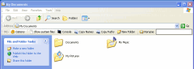

StExBar : The ultimate tool for Windows Explorer
$ADSENSE_TOP$or: what Microsoft forgot to implement in the explorer.
Go to the download page.
The StExBar provides many useful commands for your everyday use of Windows explorer. And you can add as many custom commands on your own as you like.
The commands are not just available from the toolbar, but also via hotkeys and via a context menu!
Have you ever needed to open a console window while you were using the explorer? And to have that console already set to the directory you're showing in explorer right now? Well, StExBar provides that with one simple mouseclick. There's also a hotkey defined for this: simply press Ctrl-M to open the console.
A "lightweight" console is also available. Simply enter the command you like to execute into the edit box on the right of the StExBar and hit enter. The command will be executed in the system console.
Have you ever needed to have the name or full path of one or more files in another application? Ctrl-C doesn't work here, that won't copy the file path but the file itself. StExBar comes to the rescue. It provides two commands, one to copy all selected file/foldernames to the clipboard, the other copies the whole paths of all selected items. To make it even more easier to use this, a hotkey is defined Ctrl-Shift-C which copies the selected paths.
 .
.
Creating new folders is a common task in explorer. But to actually do that, you have to right-click on a folder background, choose "New" from the context menu, wait until the submenu finally appears, then choose "Folder" from that submenu. Not anymore! StExBar provides you the same with one easy click. Or even faster with the assigned hotkey: just press Ctrl-Shift-N and you have a new folder created in the current directory.
 .
.
StExBar can also help you renaming multiple files at once. It uses Regular Expression strings to do so.
You can add your own commands to the StExBar and define hotkeys for them.
 .
.
You can start your configured tools and the internal console command in elevated mode by holding down the left WIN key. This works for clicking on the toolbar button as well as when you execute the hotkey.
Go to the download page.


{kind=link}